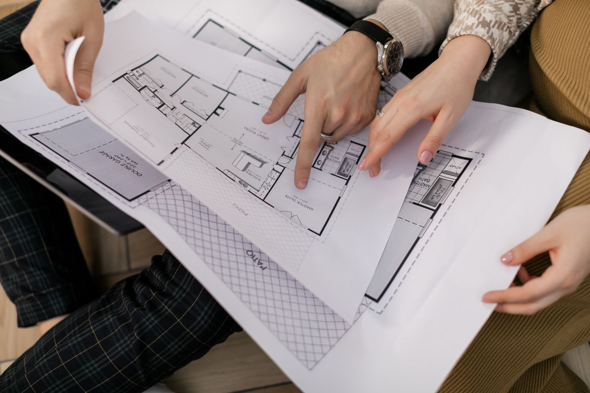
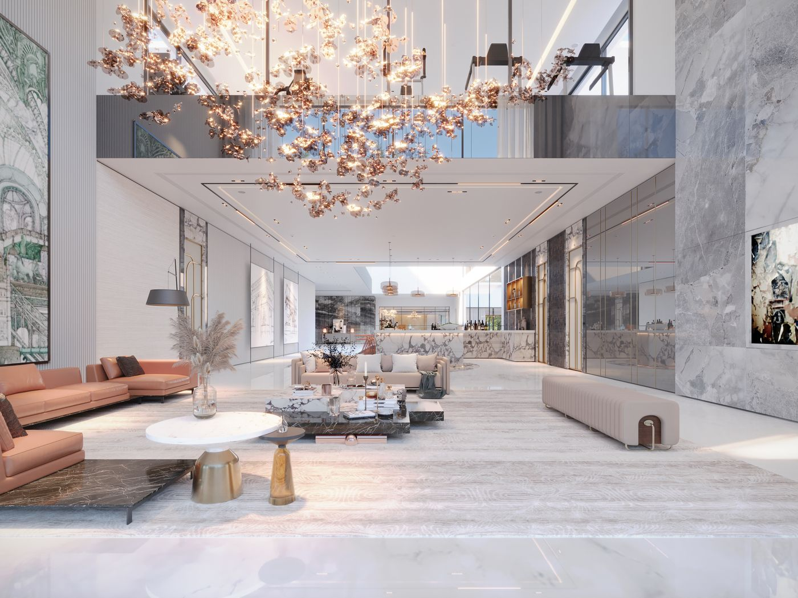
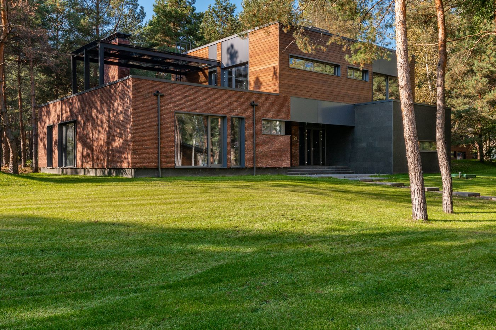

Quick answer: A genuine custom house design is drawn from a blank page around your block, brief, and budget — not selected from a catalogue and lightly modified. Design fees for a fully custom home run 8–15% of construction cost; construction itself costs $3,200–$4,500 per m² for a well-specified custom build in Sydney in 2026, against $2,000–$2,800 per m² for a project home on a stock plan. If your block is a standard rectangle in a new estate, custom design fees usually buy you very little a modified stock plan wasn’t already going to deliver.
Ask ten Sydney builders for a “custom house design” and eight will hand you the same eleven floor plans with the study moved to the other side of the hallway. That is not custom. That is a car dealership letting you pick the paint colour and calling it custom engineering.
[Right. Straight face now.] Here is what actually separates a genuine custom design from a relabelled stock plan, what it costs in 2026, and the council step most builders quietly leave out of the pitch.
- What “custom” actually means in a house design
- How the custom design process actually works
- Designing for your block, not a generic one
- Facades, inclusion tiers, and where “custom” gets diluted
- Council approval for a genuinely custom design
- What a custom house design costs in Sydney
- Design timeline: from brief to construction start
- When not to pay for a custom design
- Six questions to ask before you commission a design
- FAQ
What “Custom” Actually Means in a House Design
Three different things get sold under the word “custom” in Sydney, and they are not interchangeable.
A stock plan is one of a builder’s existing floor plans, unchanged beyond a facade selection and a colour scheme. Cheapest, fastest, and genuinely fine for the right block — see our look at Sydney’s current modern home design trends for what these ranges actually look like today.
A semi-custom design starts from a stock plan and modifies room layout, dimensions, or the odd wall within the limits of the existing structural grid. Faster and cheaper than starting fresh, with the plan’s underlying bones still constraining what’s possible.
A fully custom design starts with nothing but your block survey and your brief. An architect or building designer works out orientation, room relationships, structure, and street presence from first principles. Nothing pre-exists your project — which is also why it costs more and takes longer.
Most Sydney “custom home builders” sell the second category and market it as the third. Worth asking directly which one you’re being quoted before you compare prices between two builders — they may not be pricing the same thing.
How the Custom Design Process Actually Works

Photo via Pexels
A genuine custom design moves through four stages, and skipping any of them shows up later as a variation.
Brief and site analysis: the designer surveys the block, checks orientation and solar access, and interviews you on how you actually live — not how the brochure assumes you live.
Concept design: a first floor plan and massing study, usually presented as two or three options. This is where most of the real thinking happens.
Design development and DA documentation: the concept is engineered, detailed, and prepared for council or private certifier assessment — structural input, BASIX compliance, and consultant coordination all happen here.
Working drawings: once approved, the design is documented to construction-ready detail for pricing and building.
Expect two to three revision rounds included in a standard design fee. Anything beyond that is usually billed separately — confirm this before you sign, not after round four.
Designing for Your Block, Not a Generic One
A stock plan is drawn for a flat, rectangular, north-facing block with no easements. Most Sydney blocks are not that block.
A competent custom design accounts for the things a catalogue plan ignores: which direction your northern boundary actually faces, whether the block slopes toward or away from the street, where an easement or a protected tree sits, and how wide the block is at its narrowest point — narrow-lot design (under 10m frontage) is close to its own discipline.
Solar access matters more than most briefs mention up front. A living area on the wrong side of a north-facing block can lock you out of winter sun permanently — a mistake no amount of joinery budget fixes after construction.
BASIX (Building Sustainability Index) compliance is mandatory across NSW residential construction and interacts directly with orientation, glazing, and insulation choices. A design that ignores this early usually needs costly rework to pass, not a minor tweak.
Facades, Inclusion Tiers, and Where “Custom” Gets Diluted

Photo via Pexels
Most volume builders sell inclusions in tiers — an entry range with curated, cost-controlled finishes, and a premium range with more flexibility and higher specification. Facades work the same way: a set of pre-drawn options, occasionally with room for a modified render.
Nothing wrong with tiers on their own terms. The issue is when a tiered, catalogue-based system gets marketed with the word “custom” attached, and a buyer assumes they’re getting the third category from earlier in this article when they’re getting the first.
A genuinely custom design has no facade catalogue and no inclusion tiers — every finish, joinery detail, and material is specified individually against your budget. That freedom is exactly why fully custom homes cost more per square metre than a tiered inclusion package: nothing is pre-negotiated at volume.
Council Approval for a Genuinely Custom Design
This is the part most builder websites skip, because it doesn’t apply to their business model.
Project builders largely operate on greenfield estate land — new, unencumbered blocks where a Complying Development Certificate (CDC) is common and approval can land in as little as 20 business days through a private certifier.
A genuinely custom design usually sits on an established block in an existing suburb, and established suburbs come with overlays project builders rarely encounter: heritage conservation areas across parts of Woollahra, Mosman, Ku-ring-gai, and Hunters Hill; bushfire attack level (BAL) assessments on bushland-interface blocks; and coastal hazard mapping on clifftop or foreshore sites, as we’ve covered for eastern suburbs builds specifically.
Any of these can push a project from a 20-business-day CDC into a full Development Application running several months to over a year, depending on the council. Confirm your site’s overlays on the NSW Planning Portal before a designer draws a single wall — it changes what’s realistic to design in the first place.
What a Custom House Design Costs in Sydney

Photo via Pexels
Design fees and construction costs move independently, and both scale with how custom the project actually is.
Design fees: a fully custom design typically costs 8–15% of the construction budget, covering concept through to working drawings. A modified stock plan from a project builder’s in-house drafting team is usually a flat $3,000–$10,000 — a fraction of the cost, because it starts from an existing template instead of a blank site.
Anything quoting a full custom design — concept, DA documentation, engineering coordination, working drawings — for under 6% of construction cost is not doing custom design work. The maths does not support that scope at that price; something in the process is getting shortcut.
Construction costs for 2026, by design category:
| Design category | Cost per m² (construction only) |
|---|---|
| Project home / stock plan | $2,000 – $2,800 |
| Semi-custom (modified plan) | $2,800 – $3,500 |
| Fully custom design | $3,200 – $4,500 |
| Architectural / high-spec custom | $4,500 – $6,500+ |
A fully custom-designed knockdown rebuild across Sydney’s middle-ring suburbs typically lands at $2M–$3.5M all-in — land, design, approvals, and construction — depending on block value and specification. See our Carlingford knockdown rebuild breakdown for how that plays out suburb by suburb.
The design fee is rarely the number that shocks people. The construction cost per m² is. Multiply it by your floor area before you fall in love with a floor plan.
Design Timeline: From Brief to Construction Start
| Phase | Duration |
|---|---|
| Brief and site analysis | 2–4 weeks |
| Concept design | 4–6 weeks |
| Design development & DA documentation | 8–12 weeks |
| Council assessment (CDC) | Up to 20 business days |
| Council assessment (DA, LGA-dependent) | 2–12 months |
| Working drawings post-approval | 4–6 weeks |
Total elapsed time from first brief to construction start commonly runs 9–18 months, almost entirely dictated by which council assessment path your site qualifies for. Our North Shore custom builder guide covers how much that range varies by LGA.
When Not to Pay for a Custom Design
This section is the one most design guides skip. We are not most guides.
Skip custom design fees if your block is a standard rectangle in a new estate, north-facing, with no easements or overlays. That block is exactly what stock plans are engineered for — a modified plan will deliver 90% of the outcome for a fraction of the fee and timeline.
Skip it if your brief matches a display home you’ve already walked through and liked. Paying custom design fees to redraw something you were happy with in a showroom is money spent on process, not on a better outcome.
Skip it if your construction budget is under roughly $600,000. Below this level, custom design fees (8–15% of a smaller number) still buy the same amount of coordination work, and the percentage starts eating into finishes and inclusions instead.
Six Questions to Ask Before You Commission a Design
Ask these before the first concept sketch, not after you’re three revisions deep and attached to the result.
- Are you a registered architect or a licensed building designer, and what's your professional indemnity cover? Both can produce a competent custom design in NSW — confirm which you're engaging and what insurance sits behind the work.
- How many revision rounds are included before extra fees apply? Get this in writing. It's the single most common source of billing disputes on design contracts.
- Will you lodge and manage the DA, or is that a separate engagement? Some designers stop at documentation; others carry the project through council assessment and respond to information requests.
- Can I see completed designs on a block with similar constraints to mine? Slope, width, heritage overlay — ask for the closest match to your actual site, not the glossiest portfolio piece.
- What's included in the design fee versus billed separately? Structural engineering, BASIX assessment, and land surveys are commonly excluded. Ask for the full list before comparing quotes.
- Who owns the design documentation if I change builders later? Verify the licence itself on the NSW Fair Trading register while you're at it — for the designer and for whoever ends up building it.
Six questions. Cheap insurance against an expensive misunderstanding.
FAQ
What’s the difference between a custom house design and a project home design?
A project home design is a stock floor plan from a builder’s catalogue, built for hundreds of previous clients and modified only at the margins — facade, room swaps, minor extensions. A custom house design is drawn from a blank page by an architect or building designer around your specific block, brief, and budget. Nothing in a custom design pre-exists your project.
How much does a custom house design cost in Sydney?
Design fees for a fully custom house typically run 8–15% of the construction cost, covering concept design through to DA documentation and working drawings. Construction itself costs $3,200–$4,500 per m² for a well-specified custom build in 2026, against $2,000–$2,800 per m² for a project home on a stock plan.
Do I need an architect, or can a building designer handle a custom design?
Both can design a custom house in NSW. Registered architects carry the title legally and typically lead more complex or architecturally ambitious briefs; qualified building designers handle the majority of suburban custom homes competently and for a lower fee. What matters more than the title is seeing completed work on a block with constraints similar to yours.
Can I take a project builder’s plan and just customise it?
Yes — this is a semi-custom design, and it’s a legitimate middle path. You get faster documentation and lower design fees than starting from scratch, at the cost of the plan’s underlying bones — room proportions, structural grid, roof form — which usually can’t change much without the modification cost approaching a full custom design anyway.
How long does designing a custom home take before construction starts?
Budget 4–6 months for concept design and DA documentation, then 2–12 months for council assessment depending on the LGA and whether the site qualifies for Complying Development. Working drawings after approval add another 4–6 weeks. Total time from first brief to construction start is commonly 9–18 months.
Is a custom design worth it for a standard block in a new estate?
Usually not. A rectangular, unencumbered block in a greenfield estate is exactly what project home catalogues are engineered for. Paying custom design fees to reproduce what a $5,000 modified stock plan already delivers is money spent on process, not outcome.